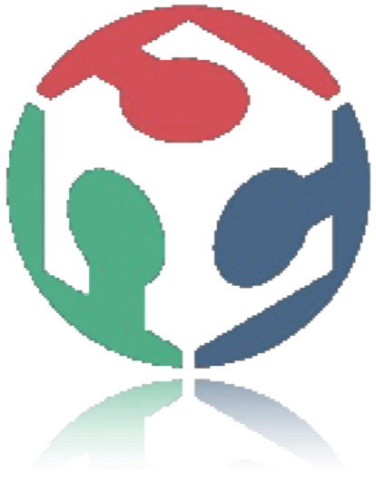

Minchee Lab
A FabLab for Macau
Agenda
- What is a Fab Lab?
- A vision for Macau
- Organization and Activities
- Business Model
- What's next?

What is a Fab Lab?
A Place for Collaborative Digital Fabrication
It is a workshop open to the public with a set of resources (tools, computer-aid machine) to build objects
Fab Lab, the origin
- funded at MIT, Massachusset by Prof. Neil Gershenfeld
- based on the original course “How to make almost anything?”
International Network
A worldwide network
- Access: open to public, share, learn howto
- Education: project-based training, peers learning, documentation
- Responsibility: safety, cleaning up, operations
- Secrecy: open designs and processes, IP
- Business: act as a technical incubator
What's inside a Fab Lab?
De machines contrôlées par ordinateur : imprimantes 3D, découpeuses (laser, plasma, jet d’eau…), fraiseuses… pour fabriquer des moules, des pièces, des outils;
De plans de design numériques partagés gratuitement par les autres et destinés à être utilisés comme tel ou modifiés au besoin. Voir le répertoire Thingiverse;
De composants électroniques et de matériel pour réaliser les projets ;
D’une boîte à outils du bricoleur diversifiée;
De logiciels libres de design numérique ;
De moyens de collaboration avec les autres Fab Labs, parfois d’un écran de télé-présence ;
???
Make your city a better place to live
- Make your own personalized object
- Fix your broken parts
- Learn how to limit your CO2 footprint
- Learn new skills
- Build a prototype for your next product
- Share and collabore on new projets
A Mission
participate...
be a catalyst...
creativity, new technology, education...
Objectives
make possible people innovation by giving access to digital fabrication tools
Minchee Fundation Structure
- Minchee Lab
- Minchee Institute: Education and Research
- Minchee Services